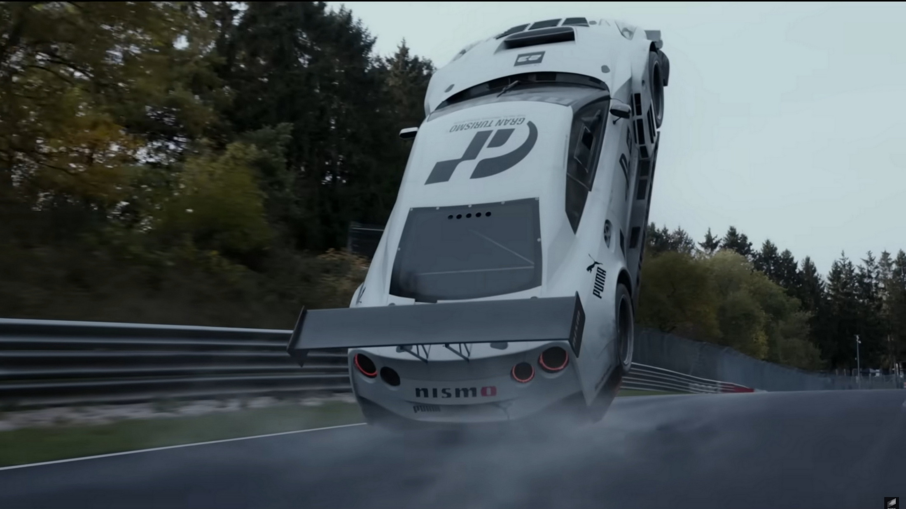
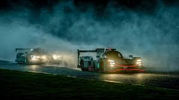
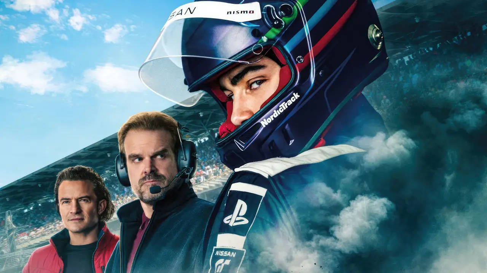

Título:* Da Jogabilidade para as Pistas Reais: Filme "Gran Turismo" Inspira Jogador a se Tornar Corredor Profissional

Inicio
Uma história inspiradora emerge do mundo do entretenimento e do automobilismo, à medida que um jogador de videogame é influenciado pelo filme "Gran Turismo" a seguir seu sonho de se tornar um corredor profissional. A linha entre o mundo virtual e a realidade se torna mais tênue quando a paixão por corridas se transforma em uma jornada emocionante rumo às pistas reais.


Da Ficção para a Realidade:
O filme "Gran Turismo" não apenas promete trazer a emoção das corridas para as telas de cinema, mas também está influenciando vidas fora da tela. [Nome do Jogador], um ávido jogador do jogo de corrida, assistiu ao filme com expectativas de uma emocionante experiência cinematográfica. No entanto, ele saiu do cinema com mais do que apenas entretenimento; saiu com uma nova motivação e um sonho.
Uma Nova Jornada:
Inspirado pela trama de superação e paixão pelo automobilismo retratada no filme, [Nome do Jogador] decidiu transformar seu amor pelos jogos de corrida em uma jornada para se tornar um corredor profissional. Ele começou a participar de corridas amadoras locais, aprimorando suas habilidades e competindo com entusiasmo renovado.
Pontes entre o Virtual e o Real:
A história de [Nome do Jogador] ressalta a influência que os jogos e o entretenimento podem ter na vida das pessoas. À medida que os jogos de simulação automobilística se aproximam da realidade, eles podem despertar paixões e aspirações que se estendem para além do mundo virtual. A linha entre jogar um jogo e viver uma experiência autêntica de corrida está ficando cada vez mais turva.
